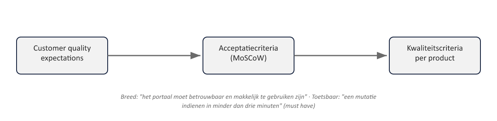
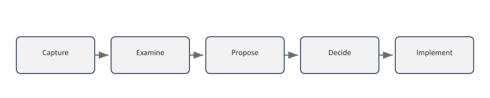

Sheet 1Titel
Project- en Programmamanagement
Niveau 1 · Deel 5: Quality en Issues
Sheet 2Twee practices, één rode draad
Quality: voldoet het product aan de afspraak?
Issues: hoe gaan we om met wat toch anders loopt?
Beide bouwen voort op Plans (deel 4)
Sheet 3Van verwachting naar criterium

Breed en vroeg → specifiek en toetsbaar
Sheet 4MoSCoW
Must have — zonder dit is het product onbruikbaar
Should have — belangrijk, geen blokkade
Could have — wenselijk
Won’t have for now — bewust uitgesteld
Sheet 5Drie onderdelen kwaliteitsmanagement
- Kwaliteitsplanning — de aanpak vastleggen
- Kwaliteitscontrole — het product toetsen (kwaliteitsregister)
- Kwaliteitsborging — het proces toetsen, onafhankelijk
Sheet 6Vuistregel control vs. assurance
Control: is dit ding goed?
Assurance: wordt kwaliteit hier goed bewaakt?
Sheet 7Terug naar bevinding 4
Plans: wéten wat een product moet zijn
Quality: ook echt tóetsen of het eraan voldoet — het sluitstuk
Sheet 8Issues: doel
Elk ongepland voorval dat actie vereist, gestructureerd vastleggen en afhandelen
Sheet 9Vier categorieën
1. Request for change — voorstel tot wijziging van de baseline
2. Off-specification — product voldoet niet aan specificatie
3. Problem/concern — al het overige
4. Ongecategoriseerd — tijdelijk, bij twijfel
| Categorie | Beschrijving | Voorbeeld |
|---|---|---|
| Request for change | Voorstel om iets aan de baseline te wijzigen | Extra functionaliteit die niet in de oorspronkelijke scope zat |
| Off-specification | Product voldoet niet (of zal niet voldoen) aan zijn specificatie | Koppeling met kernsysteem verwerkt mutaties niet binnen de afgesproken twee seconden |
| Problem/concern | Al het overige dat aandacht van de projectmanager vraagt | Twee stakeholders oneens over het gedrag van een functie, nog geen formeel verzoek |
| Ongecategoriseerd | Bij eerste signalering nog niet duidelijk welke categorie van toepassing is | Tijdelijk, totdat de categorie alsnog wordt vastgesteld |
Sheet 10Concessie
Stuurgroep accepteert een afwijking zónder correctie te eisen
Bewust, gemotiveerd, vastgelegd
Sheet 11De belangrijkste examenval
Risico = onzeker (kán gebeuren)
Issue = feit (is al gebeurd of staat vast)
Blijkt een “issue” toch onzeker? → naar het risicoregister
Sheet 12Vijf stappen
Capture → Examine → Propose → Decide → Implement

Sheet 13Autoriteitsniveaus
- Projectmanager — klein, binnen eigen tolerantie
- Change Authority — gedelegeerd mandaat, change budget
- Stuurgroep — overschrijdt mandaat of raakt de business case
Sheet 14Terug naar bevinding 6
Scherp onderscheid issue/risico voorkomt dat onzekerheden als feiten worden behandeld — of andersom
Sheet 15Vooruitblik
Deel 6: Risk en Progress — onzekerheid beheren vóórdat het een issue wordt